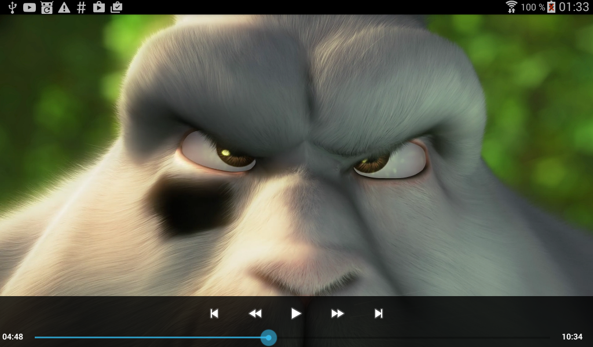
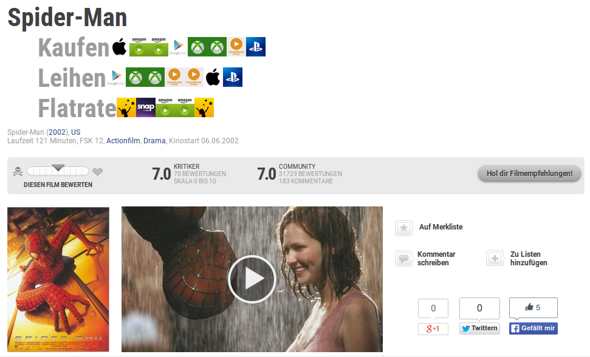

ExoPlayer-with-MediaControls
This is a small project i created to learn how to use the Exoplayer from Google.
It plays an video from an URL and you can control the playback.

MoviePilotWSW
MoviepilotWerStreamtWas
Ich hab mir für Greasemonkey / Tampermonkey ein Userscript geschrieben, dass mir auf Moviepilot.de anzeigt, wo ein Film/Serie per Stream geguckt werden kann.
Die Daten werden von justwatch.com bezogen.
Durch Auskommentieren der Werte in der moviepilotWSW.user.js kann man bestimmen was angezeigt werden soll. Zum Beispiel kann man einstellen, dass nur Amazon per Flatrate angezeigt werden soll.
Ohne Script
Mit Script